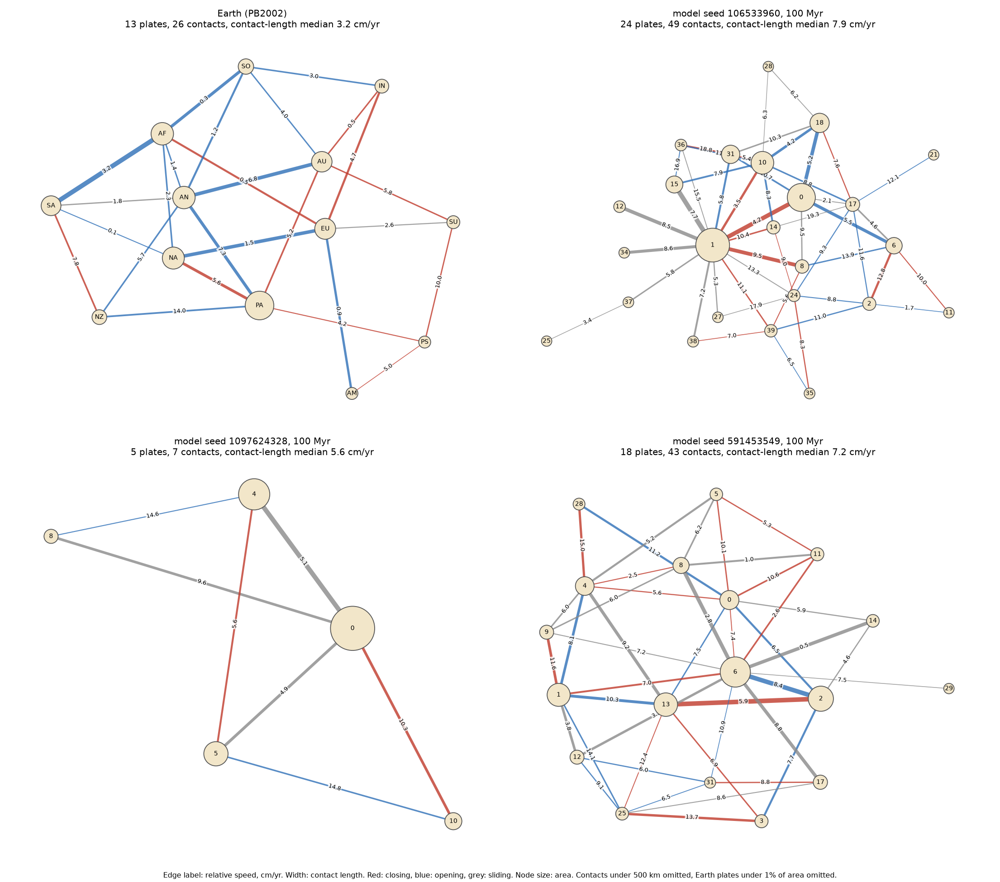

Top left: Earth (PB2002). Others: seeds 106533960, 1097624328 and 591453549 at 100 Myr, defaults. Nodes are plates (size = area), edges are contacts over 500 km (width = contact length), labels are relative speed in cm/yr. Red = closing, blue = opening, grey = sliding.
